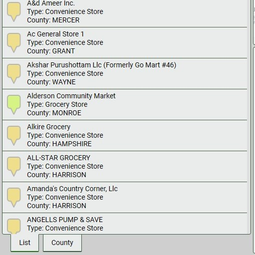
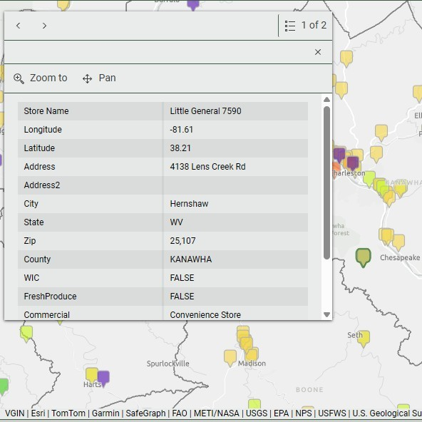
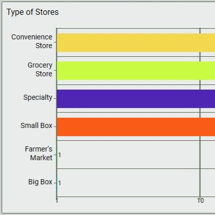
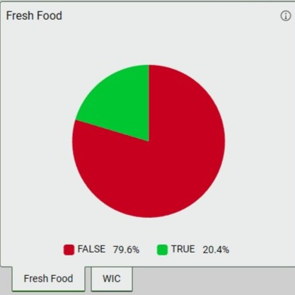
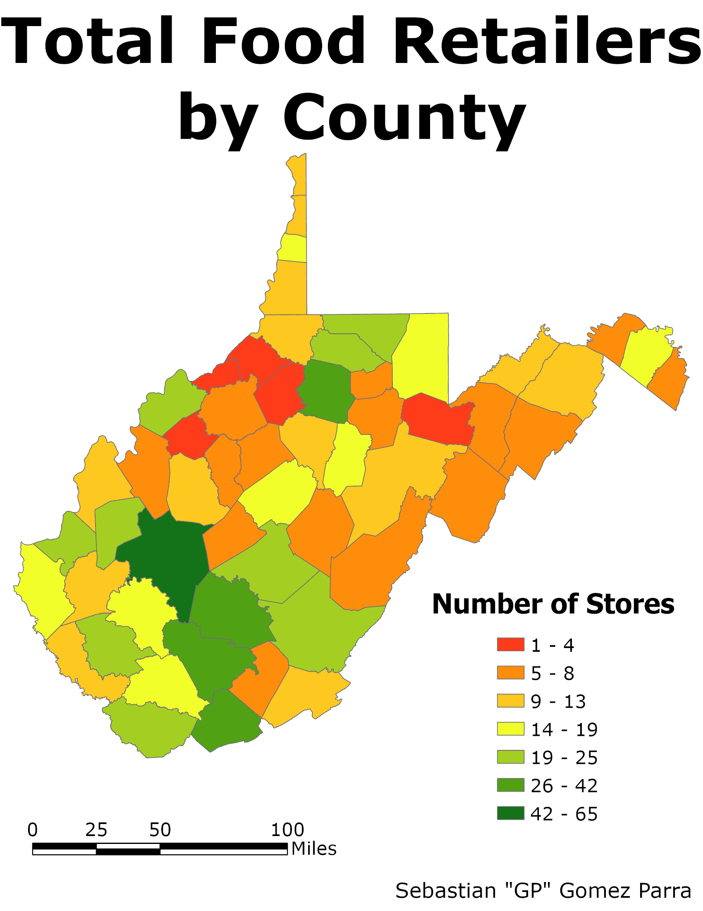
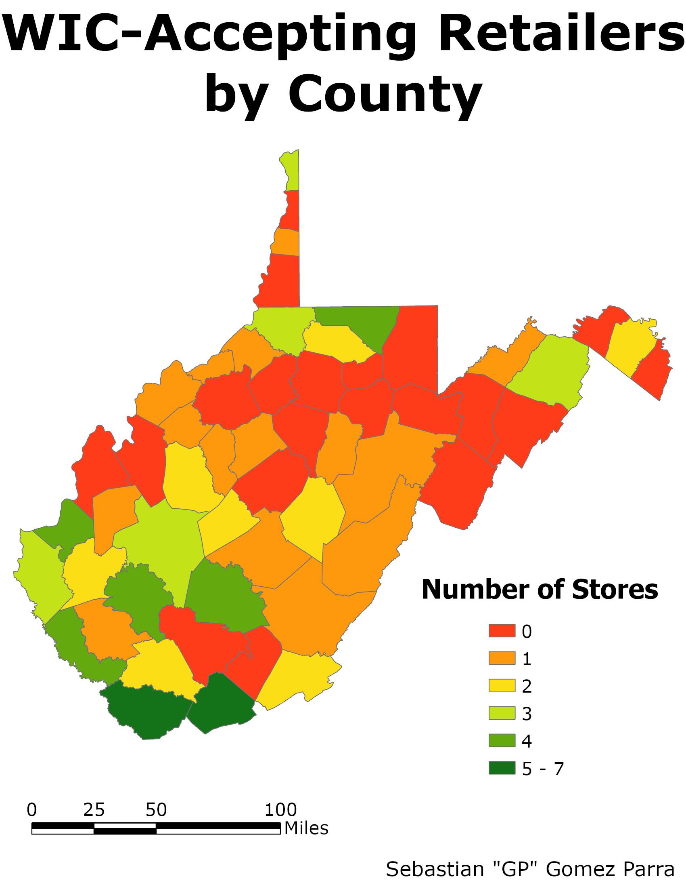
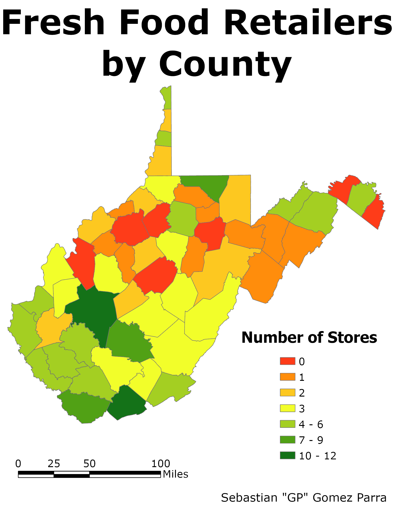

List Area
An ever-changing list of food stores shown on the map, with a search feature for specific stores and a fixed list showing the number of food stores per county.
"There's more to a food desert than having no food at all. It's the accessibility to food and the accessibility to decent food." — Nettie Freshour

"There's more to a food desert than having no food at all. It's the accessibility to food and the accessibility to decent food." — Nettie Freshour
Food access is not evenly distributed across West Virginia, one of the most rural and economically challenged states in the country. While food retailers exist throughout the state, understanding where they are located, what types of food they offer, and whether they accept assistance programs like WIC is critical to identifying gaps in food access and informing efforts to address them.
Not all food retailers are equal in the access they provide. A store listed as a food retailer may not carry fresh produce or accept WIC benefits, meaning having a retailer does not guarantee meaningful food access for all community members. Visualizing these distinctions across the state allows planners, policymakers, and community advocates to identify where incentives and investments are most needed to improve the distribution of fresh food and WIC-accepting retailers throughout West Virginia.
Food retailer data for West Virginia was downloaded and imported into ArcGIS Online and used to create an interactive dashboard allowing users to explore food retailer distribution across the state by county, retailer type, WIC acceptance, and fresh food availability.
The dashboard was designed around four interactive components, each linked so that selections in one filter the others:

An ever-changing list of food stores shown on the map, with a search feature for specific stores and a fixed list showing the number of food stores per county.

An interactive map showing all food retailers in West Virginia, color-coded by retailer type. Selecting a retailer displays additional details, including address, WIC acceptance, and fresh produce availability.

A reactive chart showing the number of each retailer type currently visible in the map view. Selecting a bar type filters the map to show only that retailer type.

Two pie charts showing the percentage of retailers with fresh food and the percentage accepting WIC, respectively. Selecting a slice filters the map to display only that category.
The dashboard reveals significant gaps in food access across West Virginia. Out of the 799 total food retailers identified in the state, only 80, just 10%, accept WIC benefits, and only 170, ~21%, offer fresh food. The most concerning aspect is that only 71 retailers both accept WIC and offer fresh food, meaning that for many who depend on nutrition assistance programs, access to fresh produce remains extremely limited.



The geographic distribution of these gaps is quite shocking. Five counties, Doddridge, Pleasants, Wirt, Tucker, and Tyler, have four or fewer food retailers of any kind, leaving residents with almost no options for food access, regardless of type. Twenty counties have no stores that accept WIC at all, and seven counties have no stores offering fresh food, meaning entire counties are fresh food deserts with no access to produce through traditional retail channels.
The results show that food access in West Virginia is not only about whether stores exist, but what those stores actually provide. The presence of a food retailer does not guarantee access to fresh food or acceptance of WIC; these distinctions have direct implications for public health planning, policy, and investment across the state.
The dashboard's primary limitation is its usability on mobile devices. The volume of information and interactive components makes the dashboard difficult to navigate on smaller screens, limiting its accessibility for users without desktop access.
The accuracy and completeness of the underlying data is also a limitation. The USDA SNAP Retail Locator represents only officially registered food retailers, meaning non-traditional sources of food access, such as gas stations selling fresh fruit, roadside produce stands, community gardens, or food banks, are not captured by this data. This means the true picture of food access may be broader than what the dashboard shows, particularly in rural counties.
Finally, the data was dated as of 2021 and reflects retailer status at that point in time. Stores may have opened, closed, or changed their WIC acceptance and fresh food offerings since then, meaning the dashboard should be treated as a snapshot rather than a current directory.
This dashboard demonstrates the power of interactive GIS tools for communicating complex spatial data about food access to a broad audience. By visualizing retailer type, WIC acceptance, and fresh food availability together in one interactive platform, it makes patterns of food access inequality immediately visible in ways that static maps or spreadsheets cannot.
The findings point to clear opportunities for policy intervention. Targeting incentives toward WIC acceptance and fresh food availability in the 20 counties with no WIC retailers and the 7 counties with no fresh food stores would have the most direct impact on food access for West Virginia's most underserved communities. Future iterations of this dashboard could incorporate more recent data, additional retailer types, and demographic overlays to further strengthen its utility as a planning tool.
The interactive dashboard is available to explore directly via the link below. Click the image to open the full dashboard in a new tab.
Click image to open the full interactive dashboard in a new tab